Vanderbilt · Learning Series · ATD facilitator guide · print edition
Change That Sticks, the facilitator guide

Run of show
| Screen | Full (min) | Core (min) |
|---|---|---|
| Welcome / QR | 3 | 2 |
| Objectives | 2 | 1 |
| The Chancellor's charge | 3 | <1 |
| Agenda | 1 | skip |
| 01 · Why AI change fails | 9 | 6 |
| Manifesto | 1 | skip |
| 02 · Name the fear | 12 | 8 |
| 03 · Safety to stumble | 12 | 9 |
| 04 · The ethics conversation | 11 | 7 |
| 05 · The Change Lab | 14 | 10 |
| 06 · Hold for the long arc | 10 | 6 |
| Recap quiz | 4 | 4 |
| Capstone · My change card | 6 | 6 |
| Glossary | 1 | skip |
| Closing · commitment | 4 | 1 |
| Total | 93 | 60 |
Audience
Managers and team leads facing a real AI change: a tool arriving, a workflow shifting, or a team already quietly worried. A Manager Voyage course. 8 to 24 works best (the naming-line and lab drills run in pairs); scales larger with room votes. No prerequisites, though Start Smarter helps with tool fluency; the traffic-light data rule from the AI courses is assumed and restated here, and Workflow & Process Redesign is the natural mechanics companion.
Room setup
Projector plus presenter device; learners on their own devices via the Welcome-slide QR; movable seating for pairs. Virtual: breakouts of 2 for the naming-line drill and the lab debrief. Set the norm in the first minute: situations and roles, never people's names, and nothing typed is saved or sent. Expect real anxiety in this room; some attendees are living the exact change the course describes, so keep the tone warm and never make anyone's situation an example.
Materials
- Projector or large display and the facilitator link open (this edition)
- Facilitator laptop with arrow keys or clicker; all notifications off
- Learner devices (BYOD) joining via the welcome-slide QR
- A few printed cheat sheets (cheatsheet.html) for anyone without a device
- Printed change cards (worksheet.html) as the no-device and projector-failure fallback
- Whiteboard or flip chart with markers for the method's four words and the naming-line rewrites
- Your own naming line, written in advance, for a change you genuinely face; you will say it out loud as the model
A week before
- Read this guide end to end, then run BOTH editions start to finish, doing every exercise, including building a conversation plan for a change you genuinely face. You will be asked to say a naming line out loud; a real one plays far better than a hypothetical.
- Write your own honest two-part answer to the job question for your own team, and say it aloud once. Someone will ask you the question directly, as a test, and your answer is the demonstration.
- Send the pre-work invite (template on this page) with the calendar invite: come knowing the one AI change nearest your team and your guess at the loudest worry, held privately.
- Decide your path now: Full (90-minute slot) or Core (60). Mark which pair drills you keep versus run solo.
- Skim the Accenture leadership research and the linked Gallup article so the Guess the Number reveals are fresh; the game carries the citations, but you should be able to say 'the research' with a straight face.
The day before
- Test the projector with the facilitator link; confirm the notes rail is readable from where you'll stand.
- Scan the welcome QR from the back of the room with your own phone; it must land on the learner edition.
- Run one full round of the Change Lab and one trainer so you can drive them without looking.
- Print 5 to 10 cheat sheets and change cards.
- Re-read the tough-questions bank; say the 'is this how jobs get cut?' response out loud once. In this course, that question is not a risk, it is the curriculum.
30 minutes before
- Welcome slide up as people arrive; it does the enrolling for you.
- Close every other tab and app; silence the machine.
- Test arrow-key navigation and one interaction (run a Guess the Number round, open the lab).
- Write 'SITUATIONS AND ROLES, NEVER NAMES' where the room can see it all session.
- Write NAME / FRAME / INVITE / HOLD as four empty boxes on the whiteboard; you'll fill them in section 02.
When things go sideways
If Projector or the site fails mid-session: Teach from the whiteboard: the four method words, the honesty rules, and the traffic light all draw in seconds. The naming-line drill and the fumble-story drill never needed a screen; the capstone moves to the printed card. The lab becomes a group walk-through: read each moment's three options aloud and have the room vote, then read the coaching for what they chose.
If Learner devices can't join (wifi or filters): Run facilitator-only: the trainers play well on the projector with the room voting A/B/C by hands; the conversation-plan builder and capstone move to paper. You lose typing, not learning.
If You're 10+ minutes behind by the Change Lab (05): Declare the Core path silently: pair drills become solo passes, debriefs shrink to one voice, and the closing tightens to the fist-to-five plus commitment round. Never cut the lab, the builder, or the capstone; they carry the session's practice objectives.
If Someone names a colleague or starts describing a specific person's fear or resistance: Protect the norm warmly: 'Hold that. Situations and roles, never names. The method works on moments, not on people.' If it keeps happening, a real team conflict is probably in the room; offer a private follow-up and steer the exercises to the role level.
If Someone in the room is visibly living the fear, not managing it: their own role is the one changing: Do not teach past them. Acknowledge it plainly and briefly: 'Some of you are on the receiving end of this change too, and everything here works in both directions.' Offer the honest two-part answer as something they deserve to hear from their own leadership, and check in privately at the break. Their presence makes the room more honest, not less.
If The room is skeptical: 'AI is overhyped, this will blow over': Don't argue futures; the course doesn't depend on any AI prediction. The frame that lands: whatever the technology does, your team's fear about it is already real, and unmanaged fear costs you today. Change leadership pays off even if the tools plateau tomorrow.
If The room is the opposite: enthusiasts who think fear talk slows everything down: Aim the enthusiasm at the arithmetic from section 03: the enthusiasts were always coming along; the change is decided by the watchful and the worried. Then let the lab do the sobering: enthusiast instincts (push adoption, declare victory) score weak, and the coaching explains why.
If A manager says 'I can't be honest; leadership hasn't told ME what's happening': Validate it; this is common and real. The honest frame still works with a bigger unknown box: 'here's what I know, here's what I don't, and here's what I'm doing to find out' is a naming conversation a manager at any level can run. What you cannot do is transmit false certainty downward; that borrows trust you'll need later.
If Someone raises a real data-privacy concern mid-flight: Stop and honor it; this is the one interruption that outranks the agenda. Restate the traffic light (green public, yellow internal in approved VU tools only, red private information about people, never), confirm their case against it, and if it's genuinely ambiguous, park it with a promise to route it to the right owner rather than improvising policy from the front of the room.
Tough questions, ready answers
Q: Is this how our jobs get cut? Be honest.
The honest answer has two parts, and this course exists to teach it. Part one, what anyone can know: AI changes tasks before it changes roles, and in most organizations no role decision has been made when the tools arrive. Part two, what a manager can promise: that any news about the team's roles comes from the manager first, with the team in the room, and that saved hours get a named, visible destination. What no one should promise is that nothing will change; that promise cannot be kept, and the room knows it. The difference between a team in dread and a team in motion is usually whether someone answered this question honestly, early, and as many times as it was asked.
Q: Isn't naming the fear just making people anxious about something they hadn't worried about yet?
The fear is already there; the research and every hallway conversation say so. Gallup finds most employees have heard no clear AI plan from leadership, and people do not fill silence with calm. Naming does not create the fear; it moves it from the hallway, where it grows, to the room, where it can be answered. The one real risk is naming without framing: if you say 'I know this is scary' and change the subject, you've confirmed the fear and answered nothing. The move is always name, then frame, in the same breath.
Q: What if I honestly don't know whether roles will change? Leadership hasn't told me either.
Then say exactly that, because it is the honest frame: 'Here's what I know, here's what I don't, and here's what I'm doing to find out.' A manager who admits the unknown and visibly chases the answer builds more trust than one who transmits reassurances they don't believe. The promise you can always keep is procedural: whatever I learn, you hear it from me first. Teams forgive uncertainty; they do not forgive discovering that certainty was faked.
Q: My team is small and busy. Do we really need an ethics 'session'? Can't I just forward the policy?
The policy sets the floor; it cannot tell your team what the floor means for your work, and it cannot host disagreement. The session can be one hour, once, plus a revisit date; the output is one page. What the hour buys you: the team's real reasoning out loud, the ambiguous cases surfaced before they become incidents, and shared ownership of the lines instead of quiet private interpretations. A forwarded PDF teaches your team that ethics is someone else's job, and the next hard call gets made alone, in silence, by whoever is most rushed that day.
Q: What do I do about my one hard resister? They refuse to touch AI at all.
First, reframe: resistance is information, not insubordination. Under 'not for me' there is usually a specific worry: quality, craft identity, or the suspicion that using the tool digs their own grave. Ask what specifically feels off, in a 1:1, and listen without defending. Then offer a low-stakes experiment they design; people rarely sabotage what they built. And protect them from becoming the room's example; a resister shamed in public becomes a resister forever. If nothing moves after real listening and real invitation, that becomes an ordinary performance conversation about the role's requirements, held honestly, which is a different conversation from change leadership.
Q: Doesn't all this fear talk assume the worst? Plenty of people are excited about AI.
Both are in your room at once, and the excited ones need you less. The arithmetic from section 03: enthusiasts experiment no matter what you do; the change is decided by the watchful and the worried, who are checking what happens to the first person who fumbles. Leading the excited is easy and loud; leading the worried is quiet and decisive. And enthusiasm has its own failure mode: it can silence the anxious, which is one of the three capstone failure modes, so channel it into experiments and keep the microphone available for the quiet.
Q: How is this different from generic change management training?
The bones are shared; the specifics are not. Three things are distinctive about AI change: the fear is existential rather than procedural (the unsaid question is about being replaced, which is why naming matters more than usual), the ground keeps moving (capabilities shift quarterly, so decisions need revisit dates and the ethics container stays open), and there is a hard data floor (the traffic light) that no amount of enthusiasm may cross. Generic change models assume the change finishes; this one is built for a change that keeps changing.
Copy-paste templates
Pre-work invite (paste into the calendar invite)
Subject: Before our Change That Sticks session. One thing to bring, in your head: the AI change nearest your team, whether it's a tool arriving, a workflow shifting, or just a rumor with momentum. Come with your honest guess at the worry your team feels most and says least. You will never be asked to name people; every exercise runs on situations and roles, and everything you type stays on your screen. That's it, no reading, no tools to install.
7-day pulse (send one week after)
Subject: One week later, did the conversation happen? Three quick lines, reply whenever: 1) Did you have the naming conversation (or your chosen first move) from your change card? 2) What did your team say that surprised you? 3) When is the ethics session, and what's on its agenda? Replies come to me only. Not yet? The card still works; this note is your nudge.
30-day re-poll (send a month after)
Subject: Thirty days of holding. Two questions, same scale as the room: 1) Fist to five, how confident are you now leading your team through this change? 2) What are the quiet signals showing: who speaks in meetings, what surfaces in 1:1s, and has the job question come back? Reply with a number and a line. The before-and-after pair is how we know this session did more than feel good.
After the session
Seven days out, send the pulse: 'Did the naming conversation happen? What did your team say that surprised you? When is the ethics session?' At 30 days, send the re-poll: the same fist-to-five confidence question from the close, plus 'what are the quiet signals showing, and has the job question come back yet?' The count of naming conversations actually held is the program's headline Level 3 metric.
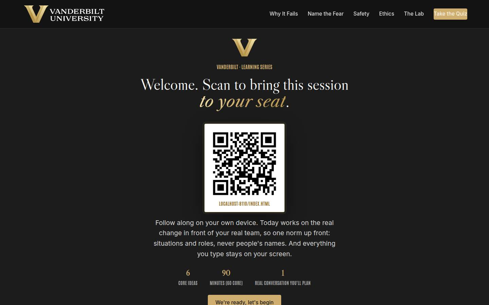
Welcome / QR Full 3 min · Core 2
Get every learner into the experience on their own device and set the norm that makes real-change material safe: situations and roles, never names, and nothing typed leaves the screen.
Say
“Welcome. Point your camera at that code before we start. Today is not about AI tools; it's about the part of AI change the tools can't touch: the fear in the room, the question nobody asks out loud, and what a leader does about both. We'll work on the real change in front of your real team, so one ground rule for the next ninety minutes: situations and roles, never people's names. And everything you type today stays on your screen; nothing is saved or sent anywhere.”
Do
- Have this slide projected as people arrive.
- Point at the QR and get phones up before you say anything else.
- Set the norm explicitly and early: situations and roles, never people's names; typed exercises stay on their screens.
- Confirm by show of hands that most of the room has the site open before advancing.
Ask
“Quick calibration, shout it out: how many of you have an AI change already in motion on your team, or coming this year? And how many of you have talked with your team, directly, about what it means for them?”
Expect:
- Nearly every hand up on the first question
- Most hands down on the second, with some sheepish looks
- One or two who have had the conversation, usually because someone forced it
Respond: Name the gap warmly: 'That gap between change arriving and change being talked about is where fear grows, and closing it is a learnable skill, which is the next ninety minutes.'
Validate: 80%+ of the room has the deck open on a device; the room can repeat the 'situations and roles, never names' norm back to you.
Watch for: Anyone bracing for an AI tools workshop. The frame that relaxes the room: today has almost no AI in it; it is a leadership session about the humans the AI lands on.
Transition: “Here's exactly what you'll walk out able to do.”
Core path: Core: one scan prompt, the norm stated once, move on.
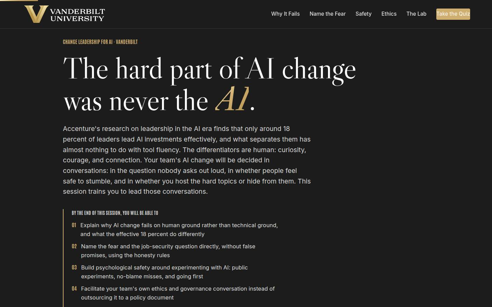
Objectives Full 2 min · Core 1
Set the contract: five capabilities, ending in one real change carded with a first conversation and a date.
Say
“Five things by the end. You'll know why AI change fails on human ground, and what the effective eighteen percent of leaders do differently. You'll be able to name the fear in the room, including the job question, without promising anything you can't keep. You'll know how to build safety around experimenting, so trying and missing is survivable on your team. You'll be ready to host your team's own ethics conversation instead of forwarding a policy. And it all lands in one artifact: a change card for the change your team is actually facing, with a date on it.”
Do
- Read the five objectives briskly, in plain language.
- Land on the last one: this session ends with a REAL change card, one change, one conversation, one date.
- Name the sources once for credibility: Accenture for the 18 percent and the differentiators, Gallup for the employee side.
Validate: Learners can say what the capstone will be (one change, one first conversation, one date).
Watch for: Tool questions arriving early ('which AI is coming?'). Park them: the session is deliberately tool-agnostic, and the method outlives any tool.
Transition: “One page before the plan: why the university's whole bet depends on how you lead this change.”
Core path: Core: objectives 2 and 5 out loud; the rest on screen.
The Chancellor's charge Full 3 min · Core <1
Connect the course to the institutional vision: a university cannot move at uncommon speed unless its managers lead AI change on human ground, with curiosity, courage, and connection.
Say
“Before the plan, the institutional stakes. Chancellor Diermeier's vision is one sentence with no hedge in it: Vanderbilt will define the great university of the 21st Century and be it. The how is uncommon speed, agility, and scale, and notice that all three are change words. A university cannot move at uncommon speed if its teams meet every new tool with quiet dread, which is why the research keeps finding that the effective AI leaders differ on human ground: curiosity, courage, connection. Our motto is the dare, Crescere aude, dare to grow, and your team will only take that dare if you make it safe to take. That is this session.”
Do
- Read the vision sentence off the slide, slowly; it carries the page.
- Walk the three focus cards, landing on the 'The team translation' line in each.
- Point at the flywheel card: values-driven leadership is a named flywheel input, and it is the one this course trains.
- Keep it under three minutes; this page frames the session, and the sections do the teaching.
Validate: The room can connect the vision to the course in one line: the university's speed depends on teams that feel safe enough to change.
Watch for: Eye-rolls at strategy language. Ground it fast: the flywheel's values-driven input is decided in team meetings like the ones they run every week.
Transition: “Six ideas, in a deliberate order.”
Core path: Core: under a minute. Read the vision sentence, gesture at the three focus cards, move on.
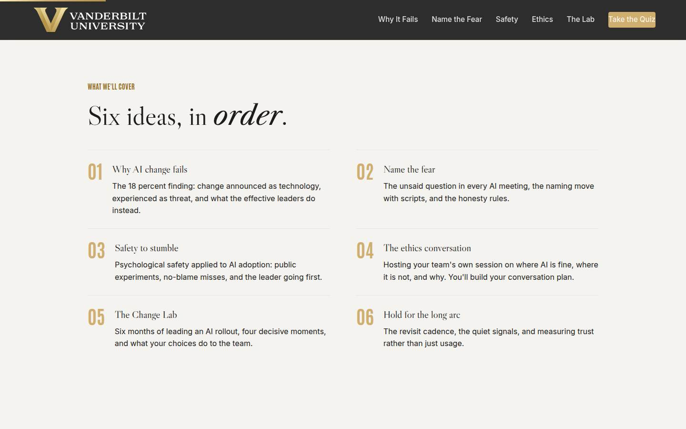
Agenda Full 1 min · Core skip
Show the arc once so learners can place each tool as it arrives: evidence, naming, safety, ethics, practice, endurance.
Say
“The arc is simple: first the evidence about why AI change fails, then the naming move, the conversation most managers never have. Then the two conditions that make change survivable: safety to stumble and an honest ethics conversation. Then the Change Lab, where you lead six months of a rollout and see what your choices do. And we end where real change lives: the long arc, months after the announcement.”
Do
- Walk the six items in one breath each.
- Point out the shape: the evidence (01), the first conversation (02), the conditions (03 and 04), six months of practice (05), and the long haul (06).
Validate: None needed; this is orientation.
Watch for: Don't teach here; every concept has its own slide.
Transition: “Start with the evidence, because the numbers are worse than most of you think, and more hopeful.”
Core path: Core: skip entirely; the deck's structure carries it.
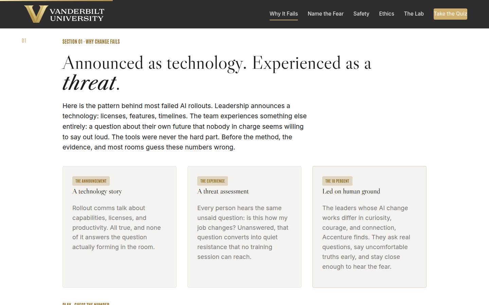
01 · Why AI change fails Full 9 min · Core 6
Establish with guessed-at, missed numbers that AI change fails on human ground: few leaders lead it well, most teams hear no plan, trust is low, and the differentiators are curiosity, courage, and connection.
Say
“Before any method, the evidence, and I want you to guess. Accenture has studied how leaders actually handle AI, and the effective share is small: fewer than one in five. Here's the interesting part: what separates them isn't technical. It's curiosity, courage, and connection, three things everyone in this room can practice. Meanwhile Gallup has been asking employees what they're hearing from leadership about AI, and the answer is mostly: nothing. Silence, plus low baseline trust, plus a technology that sounds like it replaces people. That's the ground every AI announcement lands on. Four findings, call your number before each reveal.”
Do
- Walk the three pattern cards first: announced as technology, experienced as threat, led on human ground by the 18 percent.
- Frame the game: four findings, guess each before the reveal. Missed guesses are the point; they stick.
- Run Guess the Number on devices, or as a room vote on the projector; call for guesses out loud before each reveal.
- After the reveal round, land the frame: the tools spread everywhere; the leadership stayed rare, and the differentiators are learnable.
- Run the quick check, then the pair activity: the change that was announced as good news and received as bad news.
Ask
“Think of a change you lived through that was announced as good news and landed as bad news. What did the announcement talk about, and what did the room actually worry about?”
Expect:
- Announcements about efficiency, tools, and timelines; worries about jobs, competence, and status
- Someone recalls a 'nothing will change' promise that aged badly
- A manager admits they gave one of these announcements themselves
Respond: For the self-aware manager, warmly: 'That admission is the most useful thing said so far, and notice nobody here thinks less of you; the announcement playbook we all inherited was written for a different kind of change.' Then land it: the two lists never overlap, and leading the second list is the job.
Debrief: The tools are everywhere and the leadership is rare, which is bad news for organizations and good news for you: the differentiators are conversations, and conversations can be practiced. Starting now.
Validate: Quick check correct; in the pair debrief, learners can articulate the gap between what an announcement said and what the room worried about.
Watch for: A methodology skeptic litigating survey design. Don't defend a single number; the case is the convergence: little effective leadership, little communicated planning, low baseline trust. Park deep methodology questions.
Transition: “One sentence before the method, the oldest line in organizational development, because it explains everything you just guessed wrong.”
Core path: Core: Guess the Number as a fast room vote, quick check stays, the pair recall becomes one volunteer story with no pair round.
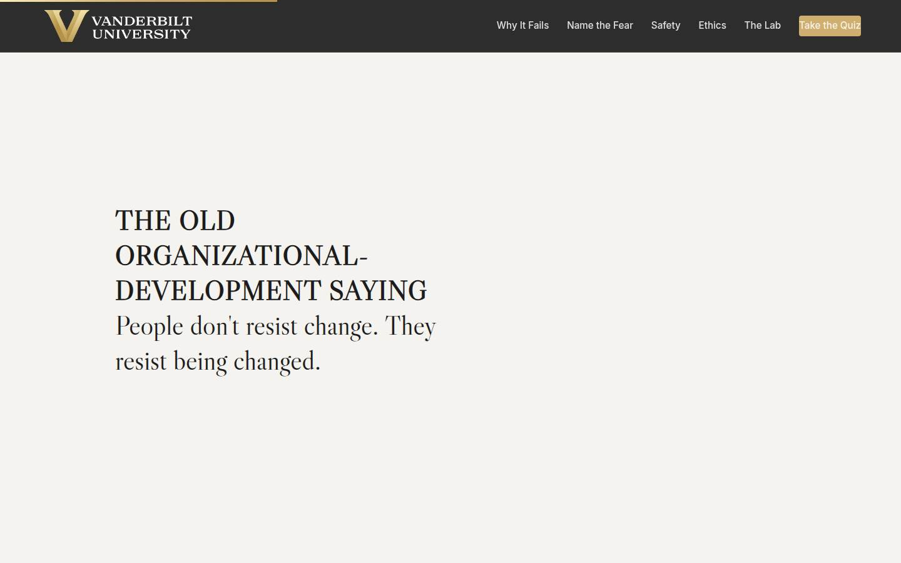
Manifesto Full 1 min · Core skip
One beat of stillness to lock the session's core idea before the method arrives.
Say
“People don't resist change. They resist being changed.”
Do
- Let the line animate word by word. Say nothing until it finishes.
- Read it once, slowly, then advance.
Validate: None; this is pacing.
Watch for: The urge to talk over it. Don't.
Transition: “So the method starts by giving people the thing being-changed takes away: the truth, out loud, first.”
Core path: Core: skip; say the line yourself as you pass it.
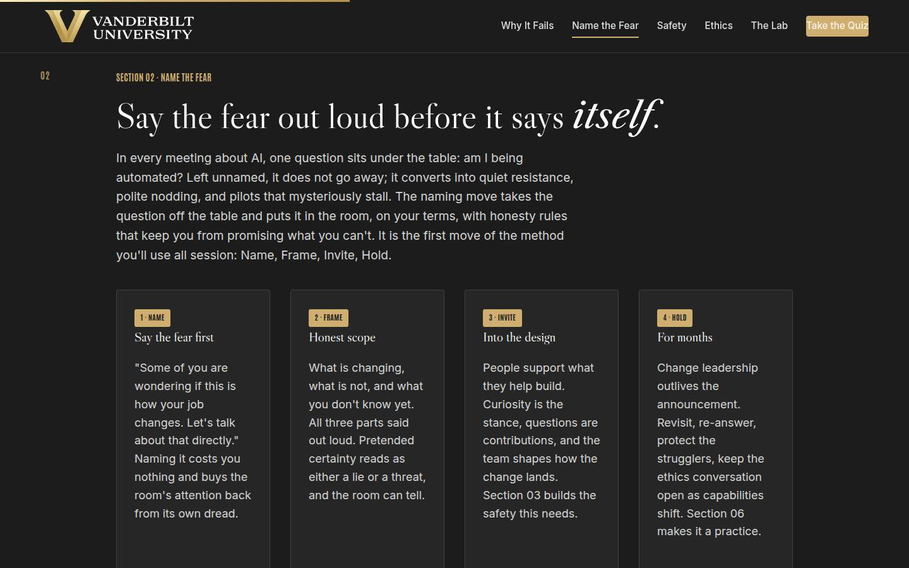
02 · Name the fear Full 12 min · Core 8
Install the naming move and the honesty rules: say the fear before it says itself, frame with honest scope, never promise what you can't keep. Introduce the full method: Name, Frame, Invite, Hold.
Say
“Here's the question sitting under every AI meeting you will ever run: am I being automated? Nobody asks it out loud, and it doesn't need to be asked out loud to run the room. Unnamed, it becomes quiet resistance: polite nodding, stalled pilots, and a team that agrees with everything and changes nothing. The move is to say it first. 'Some of you are wondering if this is how your job changes. Let's talk about that directly.' Then the frame, three honest parts: what is changing, what is not, and what I don't know yet. And the rules that keep the frame honest: never promise that nothing will change, because you can't keep it. Promise how change will be handled: with you in the room, and any role news from me first. And answer the saved-hours question before it's asked, because if people suspect saved hours become cut roles, they will make sure there are no saved hours.”
Do
- Fill the four whiteboard boxes as you walk the method cards: Name, Frame, Invite, Hold. Today's section is the first two.
- Say a real naming line yourself, for a change you genuinely face. The room needs to hear one land before they judge five.
- Send them to Judge the Opening Line: five manager lines, call each one.
- Walk the honesty rules on the gold card and be blunt about the saved-hours question: unanswered, it gets answered by fear.
- Run the pair drill from Go deeper: draft a naming line, say it to your partner, take the hardest follow-up. Then two or three lines to the room, judged warmly: would you believe this manager?
Ask
“What makes this conversation so hard that most managers never have it? Honest answers.”
Expect:
- Fear of making the anxiety worse by naming it
- Not having answers: 'what if they ask what I can't answer?'
- Feeling exposed: naming the fear means admitting the manager feels it too
Respond: Take each seriously. The first: the fear is already there; silence is what feeds it. The second: 'I don't know yet, and here's how I'll find out' is a complete, honest answer. The third: yes, and that exposure is exactly what makes the line believable. Courage is one of the three differentiators for a reason.
Debrief: Name, then frame, in the same breath. The fear moves from the hallway to the room, where it can finally be answered, and your credibility survives because you promised only what you can keep.
Validate: 4+ of 5 on the trainer; drafted naming lines contain a named fear and an honest frame, and the room can state the first honesty rule unprompted (never promise nothing will change).
Watch for: Two drifts: naming lines that are really reassurance ('I know some of you worry, but honestly there's nothing to worry about'), and managers who want a script to read verbatim. Push both toward their own words; a borrowed line reads as borrowed.
Transition: “Naming the fear opens the door. Whether anyone walks through it depends on what happens to the first person who stumbles.”
Core path: Core: method cards fast against the whiteboard boxes, trainer on devices, your model line stays; the pair drill drops to solo drafting with one volunteer line judged by the room.
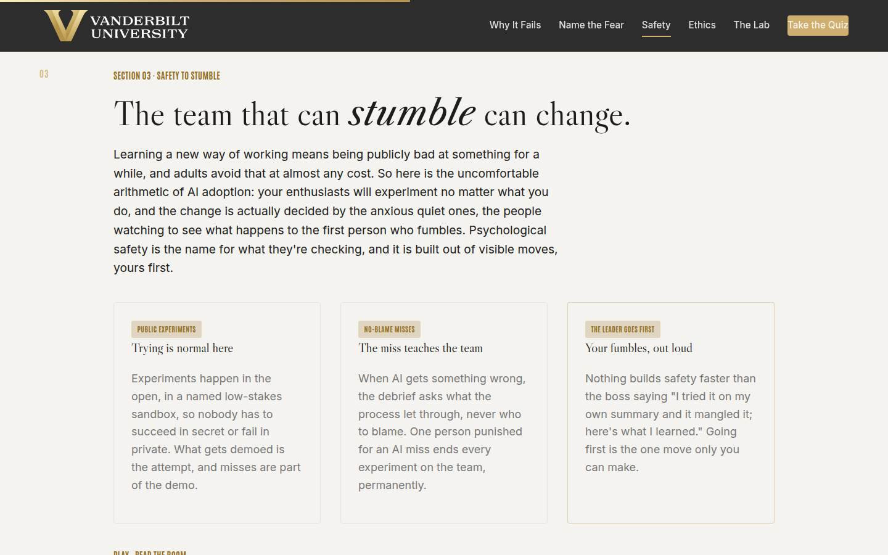
03 · Safety to stumble Full 12 min · Core 9
Apply psychological safety to AI adoption: public experiments, no-blame misses, and the leader going first, with the quiet ones named as the real vote on whether change sticks.
Say
“Learning a new way of working means being publicly bad at something for a while, and adults will do almost anything to avoid that. So here's the arithmetic that should reorganize your attention: your enthusiasts will experiment no matter what you do. The change is decided by the anxious quiet ones, and what they're watching is one thing: what happens to the first person who fumbles. If the answer is embarrassment, the experiments end, quietly and permanently. So safety gets built out of visible moves. Experiments happen in the open, misses included. When AI gets something wrong, the debrief asks what the process let through, never who to blame. And the highest-leverage move belongs to you alone: your own fumble, told plainly. I'll go first, so you can hear what it sounds like.”
Do
- Land the arithmetic first: enthusiasts experiment no matter what; the change is decided by the anxious quiet ones, watching what happens to the first fumble.
- Walk the three cards: public experiments, no-blame misses, the leader goes first.
- Tell your own fumble story, briefly and plainly. It models the exact move and costs you thirty seconds.
- Send them to Read the Room: five moments, pick the safety-building response.
- Run the pair drill from Go deeper: each person tells a real fumble story, partner reflects what it made them feel about experimenting nearby, then collect three answers to what makes a leader's fumble story land as safety rather than performance.
Ask
“Think of your own team's last three meetings. Who spoke least, and what do you actually know about how they feel about this change?”
Expect:
- A pause, then honest admissions of not knowing
- Someone realizes their quietest person is also their most essential
- A manager notices the quiet started when the AI talk started
Respond: Land the instrument: 'The 1:1 is where you find out, and the fear question is how: what about this change worries you that you wouldn't say in the team meeting? Ask it, then listen without defending anything.'
Debrief: Safety is built out of moves the team can see: open experiments, no-blame debriefs, and your fumbles first. The quiet ones are watching, which means every one of those moves is being counted.
Validate: 4+ of 5 on the trainer; every learner has a told-once fumble story in their pocket; the room can explain why the quiet ones, and never the enthusiasts, decide the change.
Watch for: Fumble stories that are actually humble-brags ('I fumbled by working too hard'). Gently model the real thing again: a genuine miss, plainly told, with what changed. Also watch for the manager who says their team has no quiet ones; ask who spoke least in their last three meetings.
Transition: “There's one conversation even safe teams avoid, and it's the one where someone finally asks: should we even be doing this?”
Core path: Core: arithmetic and cards at full strength, your fumble story stays, trainer on devices; the pair story-swap becomes a solo write of the fumble story with one volunteer telling theirs.
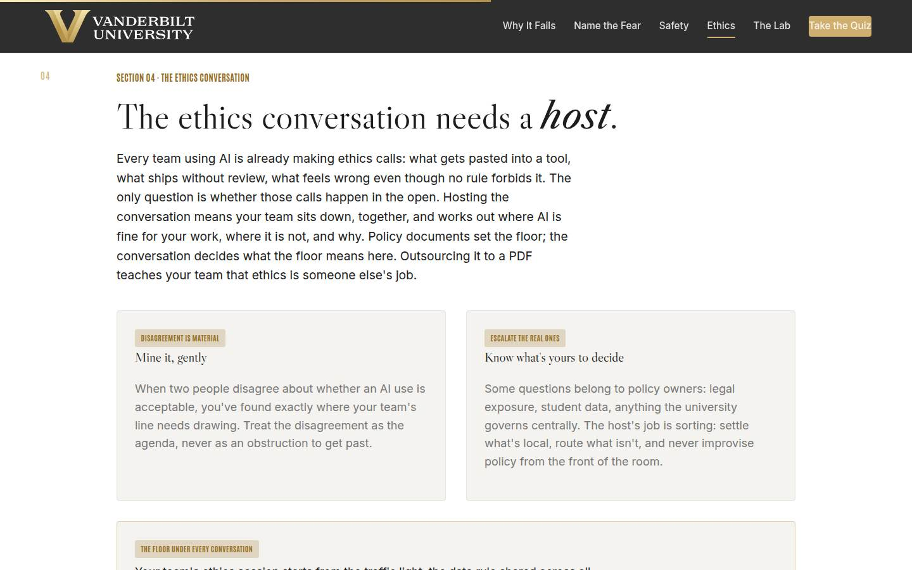
04 · The ethics conversation Full 11 min · Core 7
Make the manager the host of the team's own ethics conversation: disagreement as material, escalation sorted honestly, the traffic light as the immovable floor, and a private conversation plan built for their real change.
Say
“Every team using AI is already making ethics calls: what gets pasted in, what ships without review, what feels wrong even though no rule forbids it. Right now those calls are being made quietly, alone, by whoever is most rushed. Hosting the conversation means your team decides together: where is AI fine for our work, where is it not, and why. Two rules make you a host instead of a judge. Disagreement is material: when two people draw the line differently, you've found exactly what needs discussing. And know what's yours: some questions belong to policy owners, and the host's job is to route them, never to improvise policy. Underneath all of it, one floor that doesn't move: the traffic light. Green, public or generic, go. Yellow, internal, approved VU tools only. Red, private information about people, never. Whatever your team decides, it decides above that floor.”
Do
- Land the reframe: your team is already making ethics calls, quietly, alone. Hosting moves the calls into the open.
- Walk the two cards: disagreement is material, and know what's yours to decide versus what escalates to policy owners.
- Walk the traffic light and be unambiguous: green public, yellow internal in approved VU tools only, red private information about people, never. The light is the floor and it outranks everything, including everything taught today.
- Run the quick check (the advising-notes proposal) and make sure the room hears why a team vote can't lower the floor.
- Then the section's real work: the private builder. Three fields: the change, the loudest fear, the ethics question their team would actually ask. Repeat the privacy line before they type, and give it quiet time; field two deserves a full minute.
- If time allows, run the disclosure drill from Go deeper as a fast pair round.
Ask
“What's the ethics question your team would actually ask, if they believed the question was welcome?”
Expect:
- Disclosure: do we tell people when AI wrote this?
- Quality and craft: does using AI make our work worse, or make us worse?
- Fairness questions: who gets the saved time, and whose work changes most?
Respond: Collect three or four, then point at the builder: 'Whatever you just thought of goes in field three, and it becomes item one on your first ethics agenda. The team question, honored first, is what makes the session theirs.'
Debrief: You are the host, the disagreement is the agenda, the light is the floor, and your conversation plan now exists. The ethics container stays open from here on, because the capabilities will keep moving.
Validate: Quick check correct; every learner has a built conversation plan with a naming line, frame, invitation, and first ethics agenda. This plan feeds the capstone directly.
Watch for: The room treating ethics as compliance. The reframe: compliance is the floor (the light), ethics is the conversation above it, and the interesting questions (disclosure, quality bars, what stays human) have no policy answer. Also watch for improvised policy rulings from the front of the room; model the escalation move instead.
Transition: “Time to pressure-test everything. Six months, one team, four moments, your calls.”
Core path: Core: reframe and traffic light at full strength, quick check stays, builder stays at full length with its quiet minute protected; the pair disclosure drill drops.
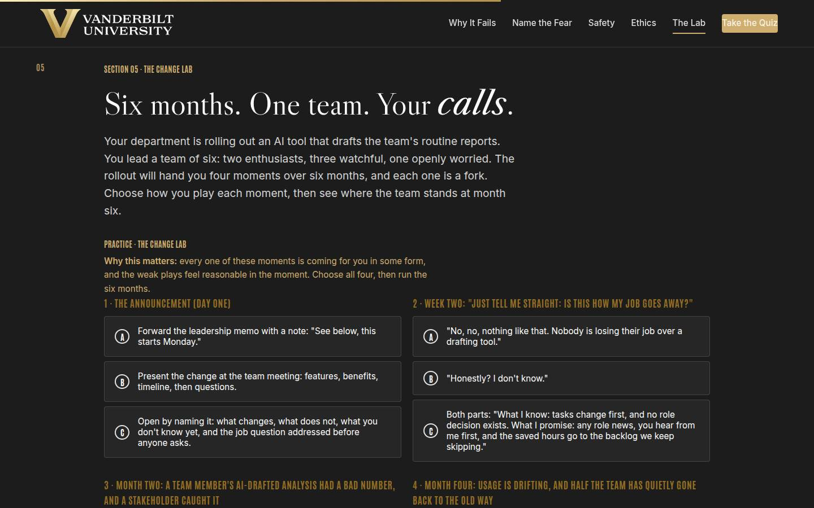
05 · The Change Lab Full 14 min · Core 10
Give every learner a full felt rep of the method under pressure: four decisive moments across six months of an AI rollout, with month-six outcomes that reward the container rather than enthusiasm. The session's deepest practice block.
Say
“Here's the situation: your department is rolling out an AI tool that drafts the team's routine reports. Your team of six: two people are thrilled, three are watching quietly, one has said out loud that they're worried. Over six months, the rollout hands you four moments: the announcement, the job question asked point blank in week two, a public fumble in month two, and the quiet drift in month four. Each one is a fork, and the weak options will feel reasonable when you read them, because they're the ones managers actually pick. Choose all four, run the six months, and read what your team looks like at the end. Then look at the coaching for every moment, especially the ones that cost you.”
Do
- Set the scenario in one breath: an AI tool that drafts routine reports, a team of six, two enthusiasts, three watchful, one openly worried.
- Send them into the lab on devices: choose all four moments, then run the six months.
- Let people get their month-six outcome individually; the mid and weak tiers teach more than the strong one, so don't coach choices in advance.
- Ask for a show of hands by tier: who got the owned change, who got compliance theater. Have one weak-tier learner read their coaching aloud; the room learns from the postmortem.
- Push the rerun: strengthen your weakest moment and run it again. The delta between runs is the lesson.
- Then the pair debrief from Go deeper: which real-life moment would you play weak, and what would you want to hear from your own manager in it?
Ask
“For those whose month six came back mid or weak: which single choice cost you, and would you have made the same one in real life?”
Expect:
- The forwarded memo or the features-first announcement
- The false-certainty answer to the job question: 'it felt kind'
- An honest 'my real answer would have been the weak one, and now I know why'
Respond: Treat that last answer as the room's win: 'That recognition is the whole lab. The weak options aren't hypothetical; they're the defaults, which is why the month-six numbers look the way they do out in the world. You now know the pattern: name, both-parts honesty, no-blame debrief, re-invite.'
Debrief: The lab's scoring is the session's thesis in miniature: the change is decided by whether the container held at four ordinary moments, and the dashboard couldn't see any of them. Your real change has the same four moments coming.
Validate: Every learner completes at least one lab run; most reach the strong tier on a rerun; every learner can name the real-life moment they'd most likely fumble and the counter-move for it.
Watch for: Learners who game the lab by picking the longest option everywhere without reading the coaching. The re-engaging question: 'which of these would be hardest for you to actually say in the room, and why?' Also watch clock discipline; this section has the least slack.
Transition: “One idea left, and it's the one that separates change leadership from change announcement: what you do in months two through six.”
Core path: Core: one lab run instead of run-plus-rerun (rerun only for learners who hit the weak tier), tier hands stay, the pair debrief becomes a solo moment-of-weakness hunt. This is the floor; never cut the lab entirely.
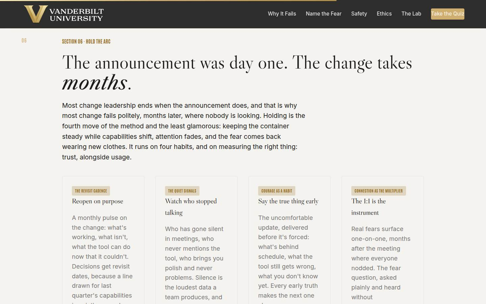
06 · Hold for the long arc Full 10 min · Core 6
Make holding a practice: the revisit cadence, the quiet signals, courage as a habit, connection as the multiplier, and trust measured alongside usage.
Say
“The announcement was day one, and most managers stop leading the change somewhere around day ten. Then it fails politely in month four, where nobody is looking. Holding is the fourth move of the method and the least glamorous. Four habits carry it. The revisit cadence: a monthly pulse, and every decision gets a revisit date, because the tool's capabilities will move and your lines were drawn for the old ones. The quiet signals: who stopped speaking in meetings, who never mentions the tool, who brings you polish and never problems. Silence is the loudest data your team produces, and no dashboard can hear it. Courage as a habit: the true thing said early, including upward. And connection as the multiplier: the 1:1 fear question, months in, asked as patiently as on day one. Measure trust alongside usage, because usage measures compliance, and the lab just showed you what compliance without trust looks like.”
Do
- Land the uncomfortable truth first: most change leadership ends with the announcement, and that's why most change fails politely, months later.
- Walk the four habit cards: revisit cadence, quiet signals, courage as a habit, connection as the multiplier.
- Run the quick check (what says the change is healthy at month four) and let the green-dashboard answer fail publicly.
- Send them to The Long-Arc Move: five months-later moments, pick the sustaining move.
- Run the pair drill from Go deeper: who on your team would go quiet, what would quiet look like, and what's your first channel-opening move.
Ask
“The job question comes back in month five, from someone you answered thoroughly in week two. What does the re-ask actually mean?”
Expect:
- Something changed: a rumor, a headline, a capability update
- The first answer didn't fully land, or trust has dipped
- Someone new is testing whether the old answer still holds
Respond: All plausible, and the response is the same: answer it fresh and fully, as if for the first time. Fear doesn't file your previous answers. The manager who sighs and points backward just told the room the honesty had a warranty period.
Debrief: Revisit on purpose, hear the silence, tell the truth early, and re-answer the job question every time. Holding is what turns a successful announcement into an actual change.
Validate: 4+ of 5 on the trainer; every learner has named (as a role) who they'd watch and what their silence would look like; the room can say why usage alone can't measure the change.
Watch for: The despair reading: 'so this never ends?' Reframe: it ends by becoming ordinary management. The revisit cadence and the 1:1 fear question fold into rhythms you already run; holding is a posture, never a second job.
Transition: “That's the full method. Quiz first, then the card that puts a date on it.”
Core path: Core: habits walked fast, quick check stays, trainer on devices; the pair drill becomes the solo version (two roles, silence described, 1:1 dates checked).
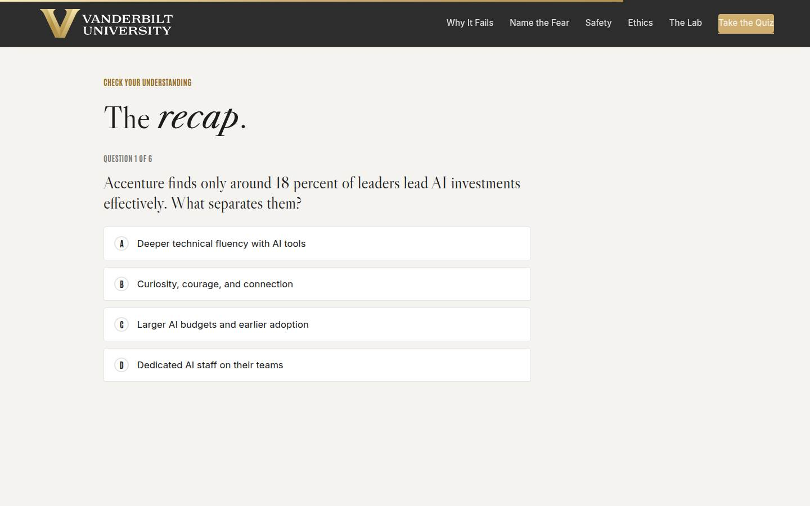
Recap quiz Full 4 min · Core 4
Score the session's knowledge against the five objectives before the capstone applies it (Kirkpatrick Level 2).
Say
“Six questions, one per big idea. This is the systems check before you write the card that leaves the room with you.”
Do
- Everyone takes it on their own device, all six questions.
- Ask for hands on 5-or-better; celebrate briefly.
- For any question the room visibly missed, do a 30-second reteach from the relevant slide, not a lecture.
Validate: Room mode at 5/6 or better. The quiz maps onto the objectives, so misses tell you exactly what to reteach.
Watch for: Racing. Frame it as the systems check before the card, not a race.
Transition: “Now the only part of today that changes anything.”
Core path: Core: keep at full length; this is the objectives' evidence.
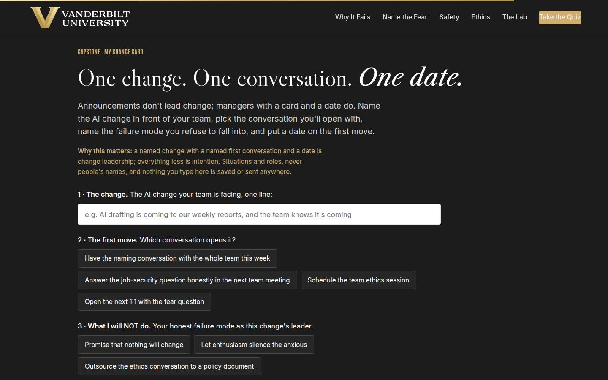
Capstone · My change card Full 6 min · Core 6
Convert the session into one dated commitment: one change, one first conversation, one named failure mode to refuse, and a date. The transfer artifact and the Level 3 seed.
Say
“Announcements don't lead change. Managers with a card and a date do. Name the change, the real one in front of your real team. Pick the first conversation: the naming conversation with everyone, the honest job answer in the next team meeting, the ethics session, or the fear question in your next 1:1. Then the honest field: what you will NOT do, because you know your failure mode; promising nothing will change, letting enthusiasm silence the anxious, or outsourcing the ethics conversation to a policy document. And the date. A named change with a named conversation and a date is change leadership. Everything less is intention.”
Do
- Frame it: announcements don't lead change; managers with a card and a date do.
- Repeat the privacy norm before anyone types: situations and roles, nothing saved or sent.
- Give quiet time; this is individual work. Circulate for stuck learners: the conversation plan from section 04 is the raw material.
- Point at field 3, what you will NOT do, as the honest one: every manager in the room owns one of these three failure modes.
- Push the build moment, then the copy button, then the long-arc line: the 30-day revisit goes on the calendar with the first move.
Ask
“What's most likely to make you skip the conversation, and what's your plan for that obstacle?”
Expect:
- No time; the week will eat it
- Fear of the follow-up questions I can't answer
- Waiting for more certainty from above before saying anything
Respond: No time: 'It's twenty minutes against months of quiet resistance; the math forgives you exactly once.' The follow-ups: 'I don't know yet, and you'll hear it from me first, is a complete answer; write it on your card.' Certainty: 'The honest frame works with a big unknown box, and your team would rather hear the honest unknown from you than the silence they're currently filling.'
Debrief: One team is about to hear its manager say the quiet part out loud, with honest edges around it. That's how the eighteen percent got there: one held conversation at a time.
Validate: Every learner builds a card (all four fields). The card plus the 7-day pulse plus the 30-day re-poll is the evidence chain.
Watch for: Cards with grand changes ('lead our whole AI transformation'). Push to ONE change with a real team attached. And date-dodging: a conversation 'soon' is not a commitment; help them pick the actual day on the spot.
Transition: “Reference shelf in one breath, and then the send-off.”
Core path: Core: protect at full length; never cut the capstone.
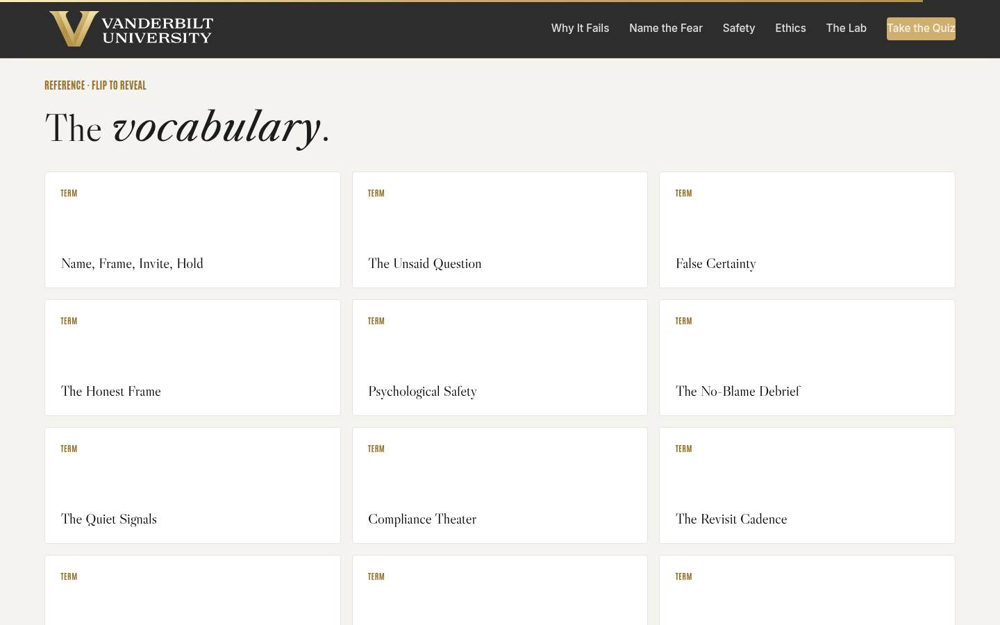
Glossary Full 1 min · Core skip
Signpost the reference layer; it lives here for after the session.
Say
“Every term from today lives here as flip cards, including 'compliance theater,' for the next time a dashboard is green and a meeting is silent.”
Do
- Flip one card on the projector (Compliance Theater is a good pick; it gets a knowing laugh and reteaches the lab).
- Tell them it's all here whenever they need the vocabulary back.
Validate: None; reference material.
Watch for: Don't tour all twelve cards; one flip makes the point.
Transition: “Last slide. One conversation left.”
Core path: Core: skip; point at it verbally from the closing slide.
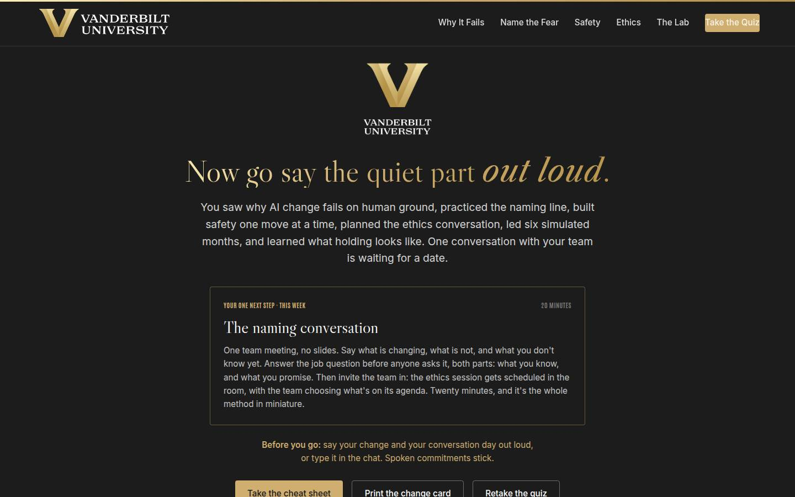
Closing · commitment Full 4 min · Core 1
Convert cards into spoken commitments, capture the Level 1 reaction check, and point at the follow-up chain.
Say
“The whole session in one breath: the research says the human side is the differentiator, the naming move puts the fear where it can be answered, safety decides whether anyone tries, the ethics conversation belongs to your team with you as host, the lab showed you the four moments, and holding is what makes it real. You have a card. Before you go: your change, and your conversation day. Say it out loud; spoken commitments stick.”
Do
- Read the featured card: the one next step is the twenty-minute naming conversation, this week, no slides.
- Run the fist-to-five (Level 1): 'On a fist to five, how confident are you leading your team through this change?' Scan and note the number; the 30-day re-poll asks it again.
- Run the commitment round, popcorn style: change and conversation day, out loud or in chat.
- Point at the cheat sheet and change card buttons; the cheat sheet is built to sit next to your 1:1 notes.
- Tell them the 7-day pulse is coming, then land the last line and stop on time.
Ask
“Around the room, one line each: your change, and your conversation day.”
Expect:
- 'The reporting tool rollout, naming conversation Thursday'
- 'The job question, answered properly at Monday's team meeting'
- Someone commits to the 1:1 fear question first because their team is already anxious
Respond: Thank each one, no commentary. For the 1:1-first person, warmly: 'Good read. When the fear is already loud, the private channel opens before the public one.'
Debrief: The session's success metric isn't in this room; it's the 7-day pulse: how many naming conversations actually happened, and what the teams said that their managers didn't expect.
Validate: Fist-to-five mostly 3+ (Level 1); a majority state a change and a day out loud or in chat. Count both; with the pulse and the 30-day re-poll, that's your evidence chain.
Watch for: Cards that quietly skipped the date. The commitment round catches them: no day, no commitment; help them pick one on the spot.
Transition: “Go book the conversation. And when your team says something that surprises you, and they will, that surprise is the sound of the change starting to belong to them.”
Core path: Core: fist-to-five plus a fast commitment round; the ending survives every cut.
Generated from facilitator/notes.json. The on-screen facilitator edition lives at ./ alongside this guide.